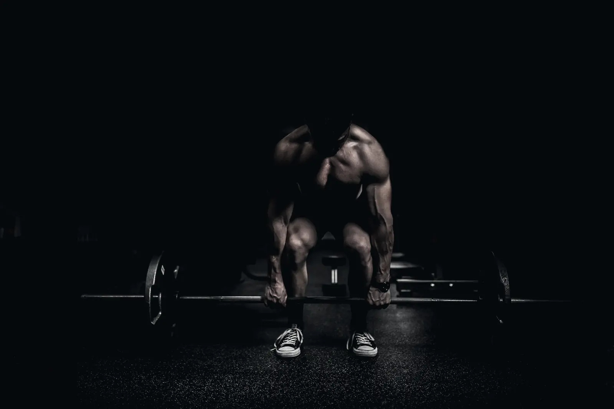
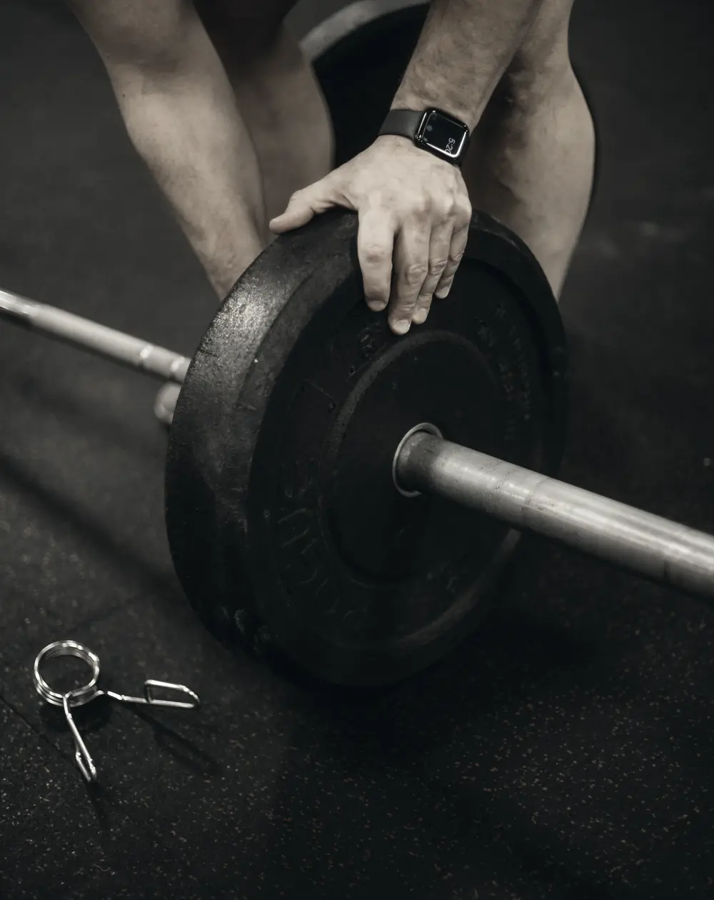
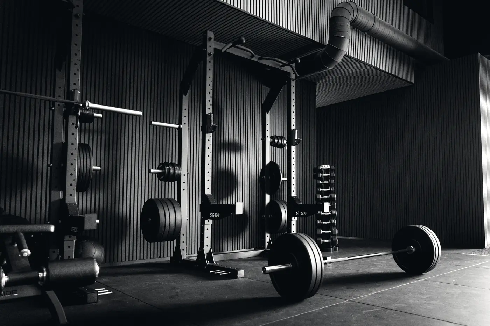
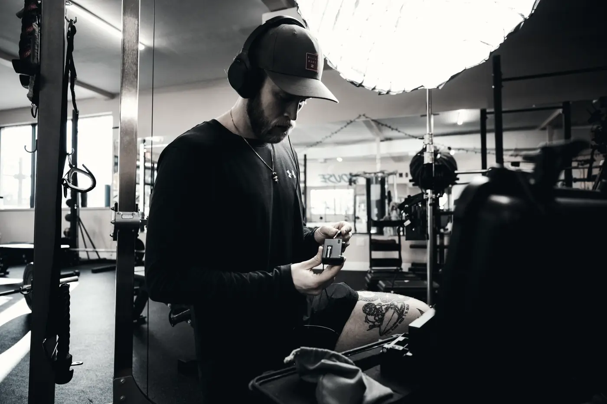
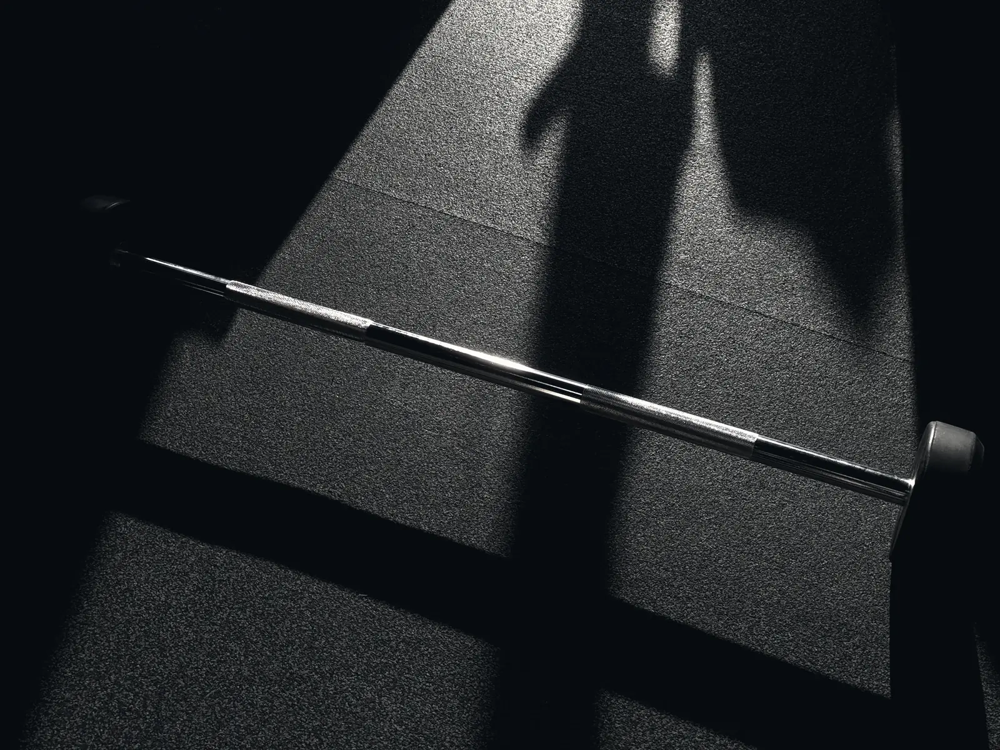

Log the set.Know the next one.
IronLog is a training log for Android. Record each set in kilos and reps, and it suggests the weight for your next session from the last one. Everything stays on your phone.
Android 8.1 or newer. Free, no account.
Write the set down before the chalk dries.
Dial in the weight and reps with quick steppers and log the set. It is saved to the phone on the spot, and the rest timer starts by itself.
- 25
- built-in exercises, each with a Vietnamese name, setup steps, a coaching tip and the form mistakes to avoid.
- 4
- ready-made programs, plus any you build yourself.
- 90 s
- default rest, adjustable from 15 seconds to 15 minutes.
It reads your last session and picks the weight.
IronLog uses double progression on your heaviest sets: fill the rep range, then add weight. Here is Bench Press, set to 6–10 reps in 2.5 kg steps.
Turn auto-increase off in Profile and it holds the weight instead. Loads round to the smallest plates your gym has: 0.5, 1.25 or 2.5 kg.
Bench Press6–10 reps, +2.5 kg
-
The range is full
Last session- 80 × 10
- 80 × 10
- 80 × 10
Every set hit 10 reps → add 2.5 kg
Today82.5kg× 6
-
Building reps
Last session- 82.5 × 8
- 82.5 × 7
- 82.5 × 7
Hold the weight, aim for 8 reps
Today82.5kg× 8
-
Too heavy, too soon
Last session- 85 × 5
- 85 × 5
- 85 × 4
Under 6 reps → drop 2.5 kg
Today82.5kg× 6

The bar, loaded.
Twenty, ten, five and the collar, loaded in that order on each side of a 20 kg bar. Keep scrolling and the barbell turns and comes apart in the same order — the order IronLog counts in when it rounds your next load to the smallest plates your gym has.
On the bar: 95 kg
Drawn in 3D in your browser. With motion reduced, this chapter stays text.
Rest keeps counting on the lock screen.
The timer runs as a foreground service with a live countdown in the notification, so it keeps going when you switch apps or lock the phone. At zero the phone vibrates and tells you to start the next set.
Nghỉ giữa set
Chạm để mở buổi tập
The notification as the app shows it, in Vietnamese.
Strength you can see, one session at a time.
For each exercise IronLog estimates your one-rep max with the Epley formula and charts it next to training volume. Sets above 12 reps are left out, because the formula overstates them.
e1RM = kg × (1 + reps ÷ 30)
Weekly sets for each muscle group
Every muscle group has a target band, from the least volume that still builds muscle (MEV) to the most you can recover from (MRV). Home also shows your streak and how recovered each group is.
Bands are the app's own targets. The set counts are illustrative.

Four programs ready on day one.
| Program | Days a week | Session |
|---|---|---|
| PPL Hypertrophy 6 Days | 6 | 50–65 min |
| Upper / Lower 4 Days | 4 | 60–70 min |
| Arnold Split Cổ Điển | 6 | 65–75 min |
| Full Body Hypertrophy 3 Days | 3 | 65–75 min |
Or build your own. Home works out which day comes next from the exercises you trained last time.
Phở counts too.
Photograph a meal, pick a photo from the gallery or just describe it. Gemini splits it into dishes with estimated grams, and you correct them before saving. Or enter it yourself from a table of about 90 Vietnamese dishes, or from the numbers on a label.
Daily targets come from your BMR and TDEE, worked out with Katch-McArdle, which uses lean mass, and checked against Mifflin-St Jeor.
Meal analysis and the weekly coach use Gemini, so they need an internet connection and an API key added when the app is built. The public APK is built without a key; logging from the dish table works without one.

The week, reviewed. The log, still yours.
Weekly coach
On the Progress tab, Gemini sums up your last seven days: sets per muscle against MEV–MRV, lifts that have stalled, calories and protein. Then it suggests what to change next week.
Your data
No account to create. Workouts live in a database on the phone. Export a CSV to open in Excel, or back up and restore everything as a single JSON file.

See you under the bar.
Install the APK on any phone with Android 8.1 or newer, or try the browser prototype first. The prototype runs on made-up data.
The APK is a debug build that GitHub Actions makes from the main branch.